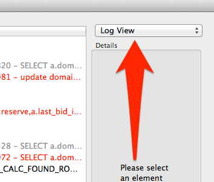
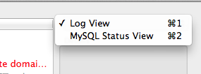

Using the MySQL Status Viewer
The second major screen of the DB Monitor tool is the MySQL Status Viewer. This screen shows you the current status of all of the systems in the clusters configured in your current Document. In order to change to the status viewer, simply click the pop-up menu in the top right hand corner of the window (It will always start with Log View) and select the MySQL Status view from the menu. Alternately you can also use the shortcut hotkey of Command-2 (as is listed in the menu).
Once you've selected the Status View, you should see a screen that looks something like this:
Status View Line Items
Understanding each status entry is fairly straightforward:
We'll break down each element:
- Host: The hostname or alias of the individual host this entry is referring to.
- Connections: The number of concurrent client connections this server is maintaining. This can include slave connections.
- Active Queries: The number of queries that aren't part of a slave replication thread that are doing something besides Connecting or Idling currently.
- Reads/sec: The number of reads currently being performed by the InnoDB engine.
- Writes/sec: The number of writes currently being performed by the InnoDB engine.
- Free Pages: The amount of the InnoDB buffer pool currently unallocated (in pages).
- Total Pages: The total amount of the InnoDB buffer pool available to the server (in pages).
- Slow Queries: The number of queries that have taken more than the long_query_time (a server side configuration option).
Getting Slave Status information:
You can also view information about a running replication slave's status by simply selecting it in the view. Just click any entry and you can see slave status, updated regularly:
That's all there is to it! Now go monitor some servers!